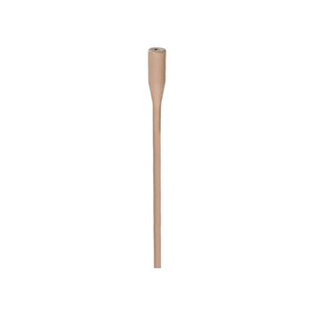

Lavalier
B6
Omnidirectional lavalier microphone
The B6 offers high-quality audio in an ultra-miniature lavalier format, with low handling noise, strong durability, and flexible placement for theatre, broadcast, and general body-worn microphone applications.